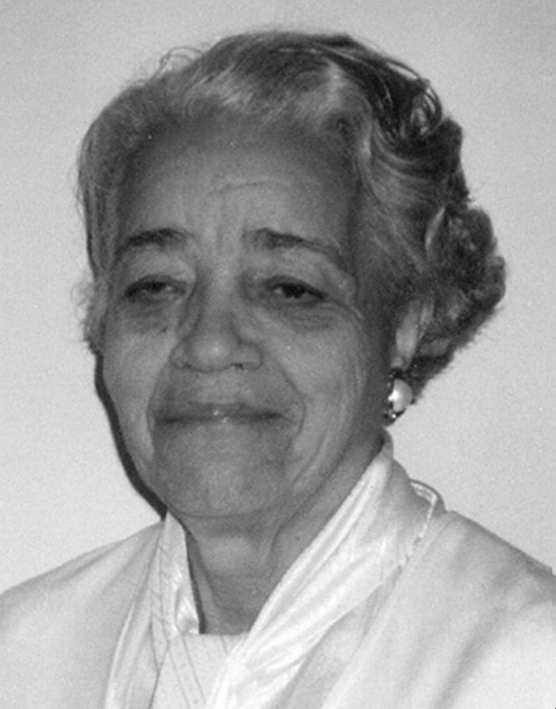
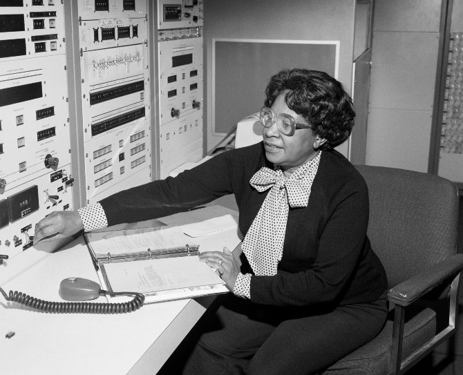
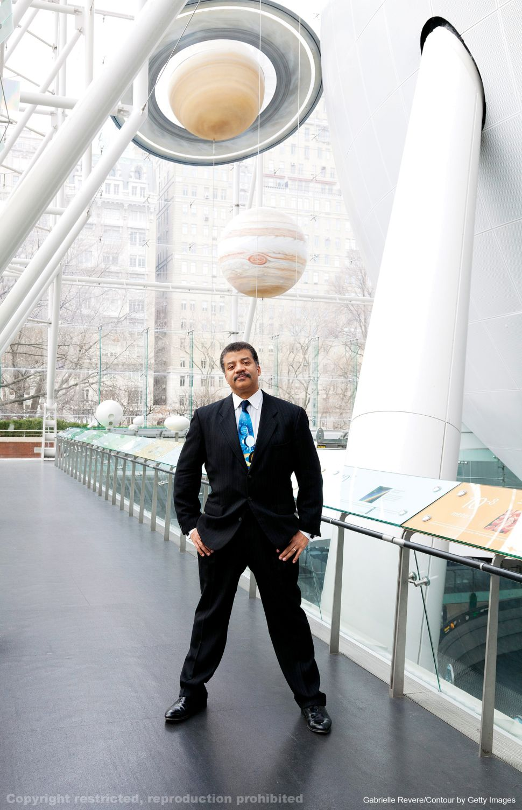
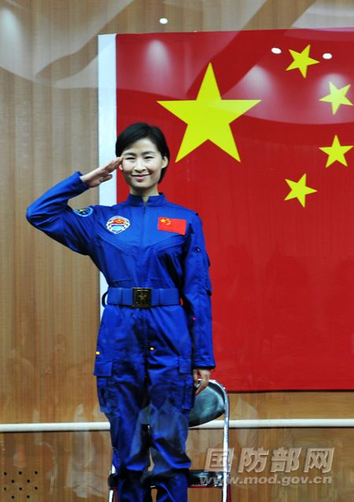
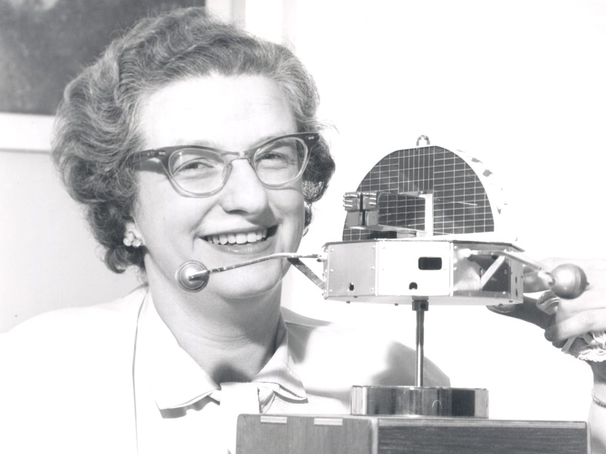
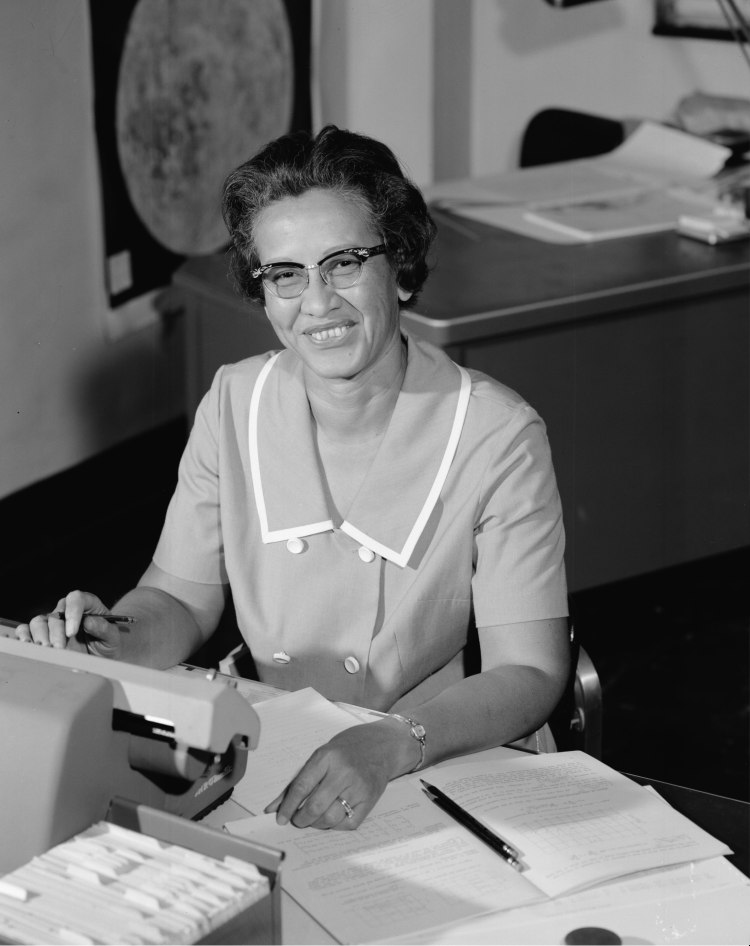
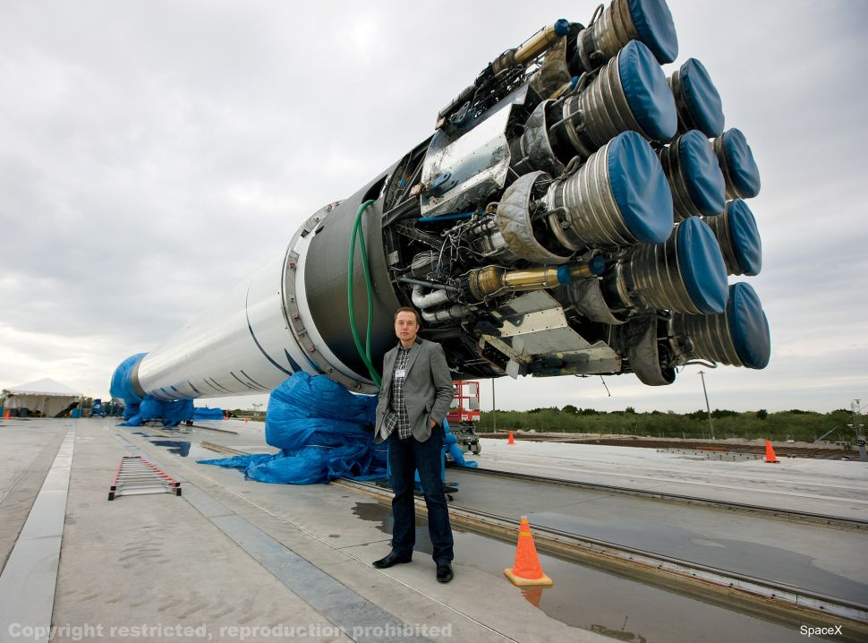
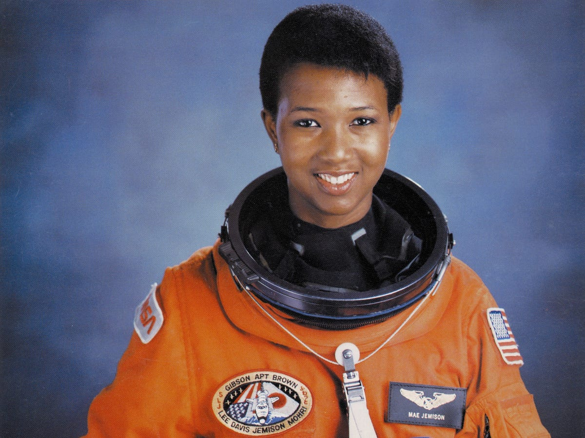
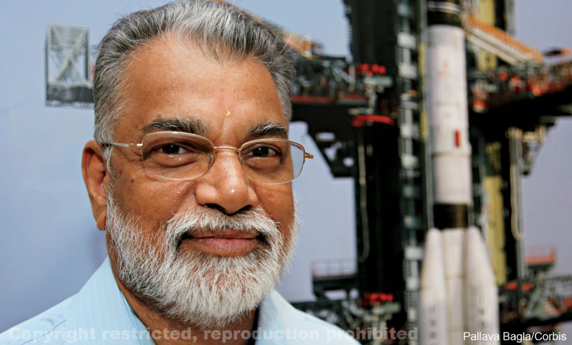

Influential people in the space industry come from a variety of backgrounds, ages, nationalities, ethnicities, and genders. Some of these individuals have overcome great odds to make an impact, as fuelled by their passion for the field. Here are examples of nine such individuals:
Nancy Grace Roman is best remembered for being the first chief of astronomy in the Office of Space Science at NASA Headquarters, and the first woman to hold an executive position at the space agency. Her managed projects include the world-famous Hubble Space Telescope, earning her the nickname, "Mother of Hubble." Mary Jackson was a "human computer" in the segregated West Area Computing Unit before working with engineers on NACA's Supersonic Pressure Tunnel that blew winds at two times the speed of sound. In 1958, she was promoted from mathematician to NASA's first black female engineer.
        